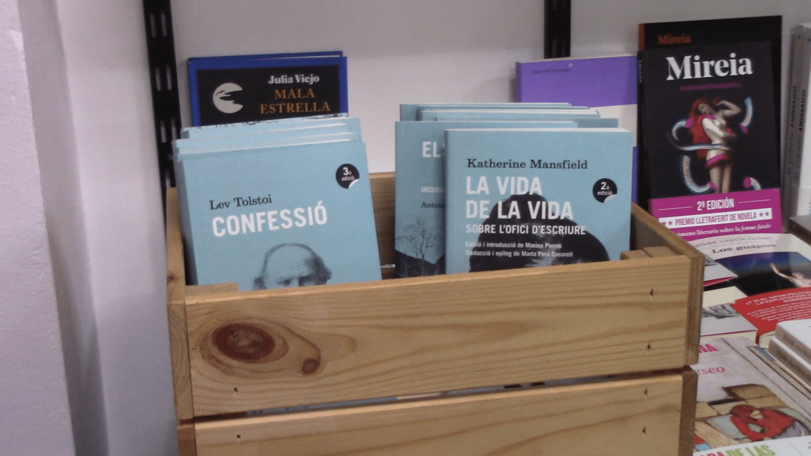
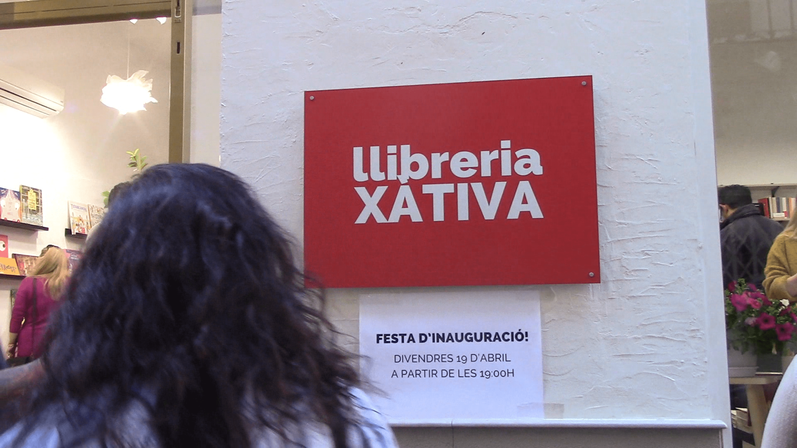
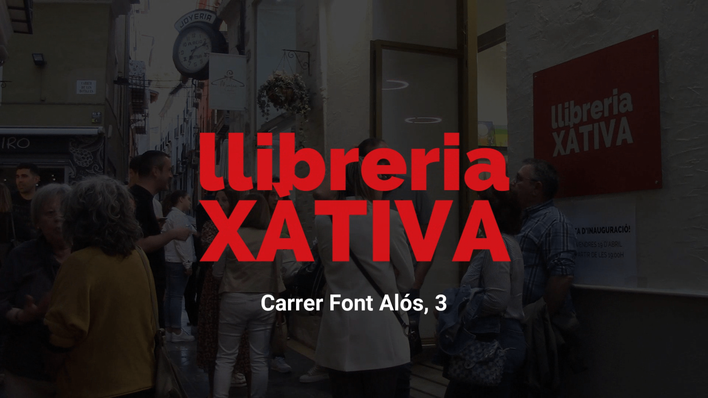
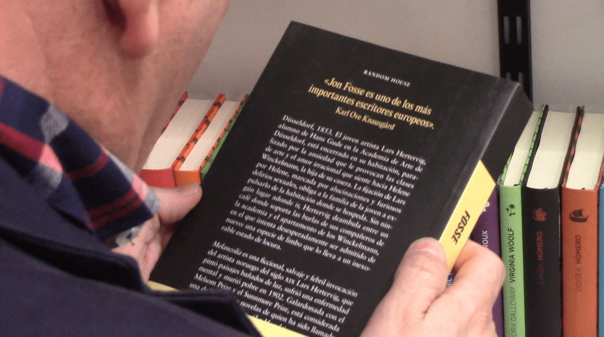

Proyecto Audiovisual: Realización, Grabación y Edición de Vídeo para la Llibreria Xàtiva
OBJETIVO DEL PROYECTO
El objetivo de este proyecto fue crear un vídeo promocional para la inauguración de la Llibreria Xàtiva, con el fin de captar la atención de los vecinos y transmitir la experiencia de descubrir la nueva librería del pueblo. El vídeo mostraba la llegada de los asistentes, su interés por los libros y el ambiente acogedor del local. La pieza audiovisual se utilizó en redes sociales para dar a conocer el nuevo espacio cultural y atraer futuros clientes.
PROCESO DE TRABAJO
1
Se rodaron múltiples escenas y planos durante toda la mañana de la inauguración de la librería. No se utilizó trípode por falta de espacio (el lugar era muy pequeño) y porque buscábamos un vídeo dinámico. Se grabó a los asistentes, los libros que se ofertaban, los distintos espacios y la distribución del mobiliario. Se buscó captar las reacciones y emociones de los clientes al entrar en la nueva librería y al conocer la gran variedad de opciones de lectura de la que disponían.
Estos fueron los principales lugares y experiencias que se recogieron en el vídeo:
Entrada de la librería
Mostrador y la facilidad de pago
Amabilidad de los dependientes
Reacciones de los clientes
Personas leyendo
Orden y decoración
Categorías de libros
Espacio cultural
Fachada exterior
Imagen visual de la librería
2
Tras la inauguración, se revisaron todos los archivos y se seleccionaron aquellos que se utilizarían para el vídeo final. Se clasificaron los vídeos según su contenido: libros, clientes, local, imagen de marca, dependientes... para una edición más rápida y eficaz. Se traspasaron a un ordenador para comenzar el montaje. Los archivos corruptos o de mala calidad se archivaron en una carpeta distinta.
3
Se trabajó en la edición del vídeo. La empresa me facilitó los logotipos y otros detalles multimedia. Se realizó el montaje sobre una pista de audio adecuada al ritmo y la velocidad deseada. El vídeo final debía tener una duración de aproximadamente 1 minuto, así que hubo que descartar una parte del material rodado durante la inauguración.
4
Por último, se compartió el vídeo con la empresa, ofreciéndoles
hasta 3 versiones con pistas de audio y planos distintos. Estuve en contacto con la empresa y con
sus trabajadores para matizar algunas escenas y recibir feedback de su parte.
Finalmente, una vez
aprobada la versión final, se publicó en redes sociales para promocionar la nueva Llibreria Xàtiva y difundir
la inauguración de la misma.
PROGRAMAS Y SOFTWARE
Wondershare Filmora
GIMP
GALERÍA DE IMÁGENES



